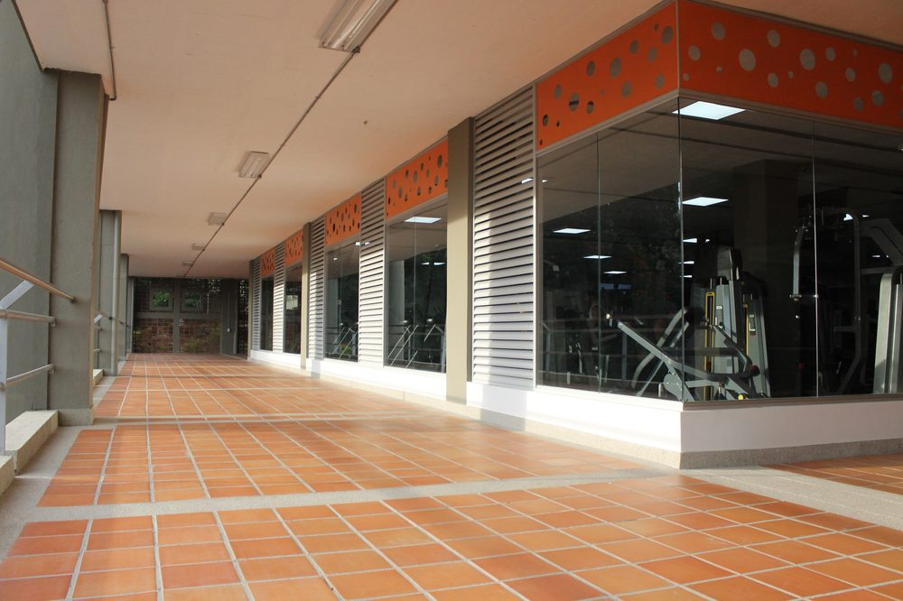
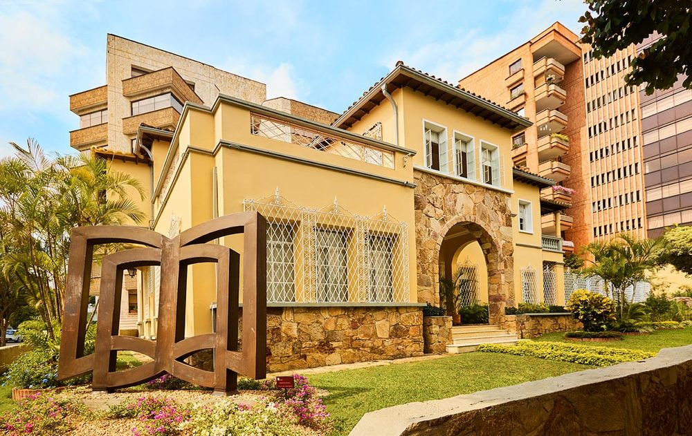

Lugares del campus
Estos son los lugares donde puedes sumar horas libres. Elige un horario que no se cruce con tus clases e inscríbete, o crea tu propia actividad.
¿Dónde y cómo obtengo horas libres?
- Busca un lugar o actividad que te guste: deporte, cultura, salud integral o encuentros sociales.
- Inscríbete en un horario libre. Revisa tus horas sin clase en tu horario.
- Asiste con tu carné estudiantil: la asistencia se registra en el lugar.
- Las horas aparecen en Mis horas libres cuando Bienestar valida la asistencia.


Lugares disponibles
Crear una actividad o lugar
Las actividades que crees aparecen con la etiqueta «Creada por ti». Puedes editarlas o eliminarlas cuando quieras.
Mapa interactivo del campus
Toca un lugar del plano para ver su información, horario de atención y sesiones de horas libres. El plano es esquemático: muestra en qué sede queda cada lugar, no está a escala.
Ubicación en Google Maps: UNAB
Campus El Jardín, Avenida 42 No. 48-11, Bucaramanga.